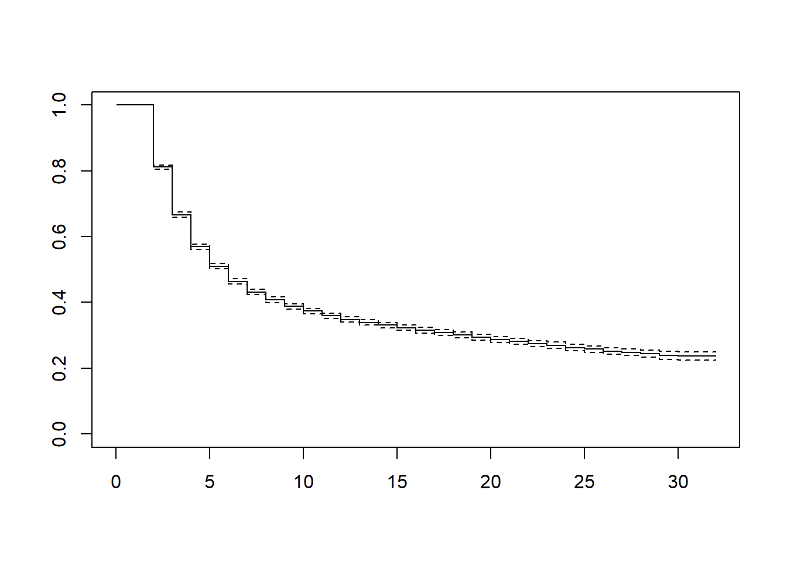
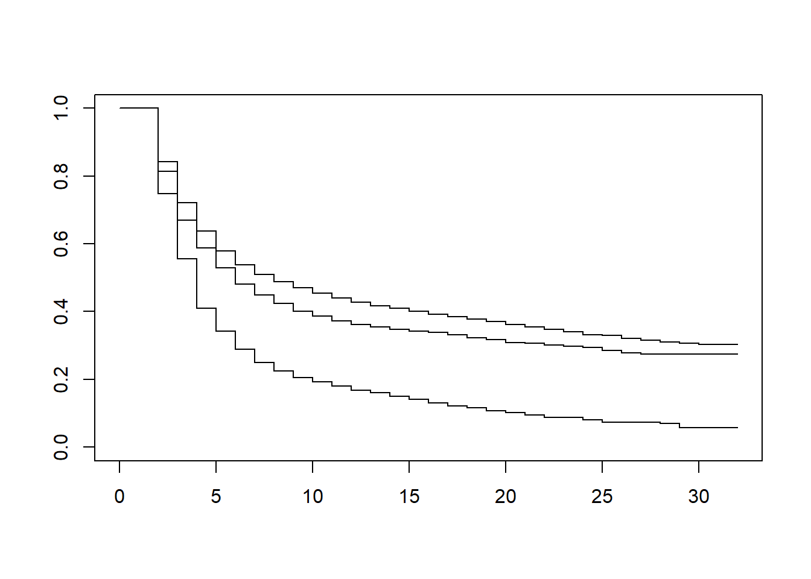
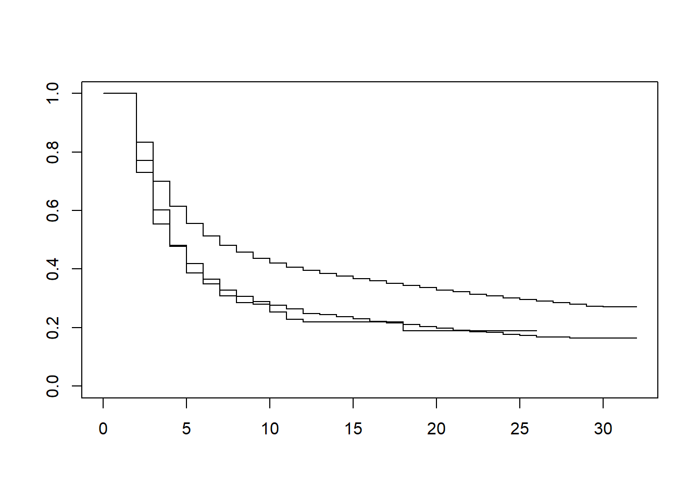
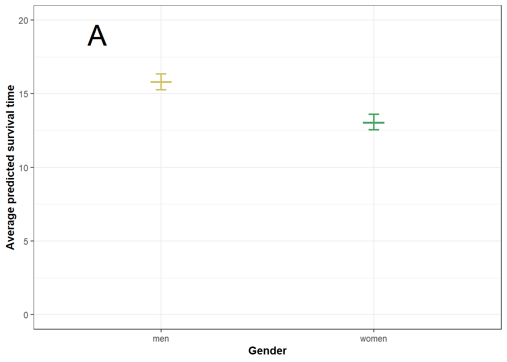
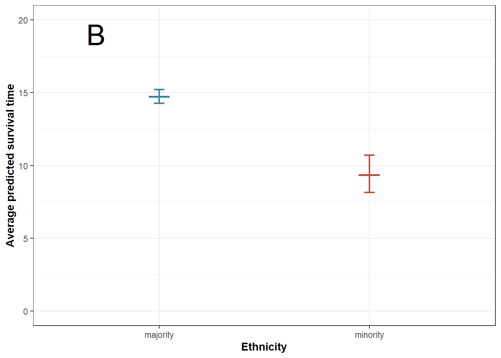
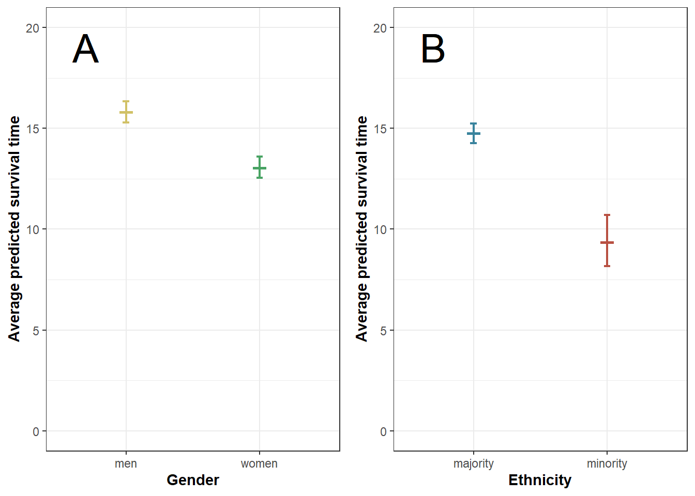
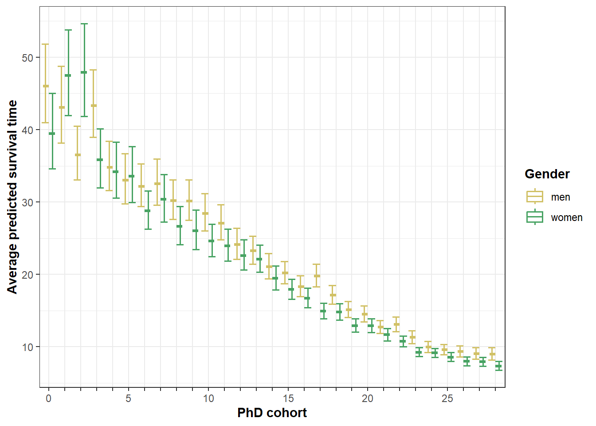
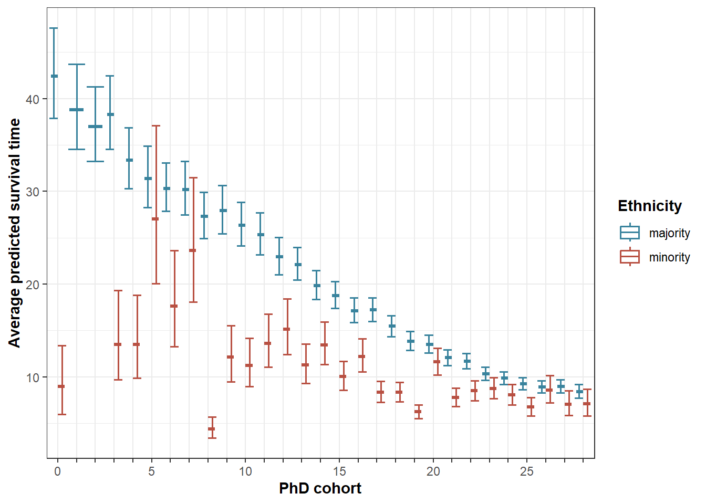

This lab journal replicates the analyses for ‘ceasing to publish’.
package.check: Check if packages are installed (and
install if not) in R (source).fpackage.check <- function(packages) {
lapply(packages, FUN = function(x) {
if (!require(x, character.only = TRUE)) {
install.packages(x, dependencies = TRUE)
library(x, character.only = TRUE)
}
})
}survival: general package to create life tables and
survival models, needed for flexsurvflexsurv: fitting flexible survival regression
modelsboot: bootstrapping for SEs of AMEstidyverse: for data manipulationggplot2: for creating figures 5-7ggpubr: for combining two figures in one (plot 5)kableExtra: formatting tablespackages = c("survival", "flexsurv", "boot", "tidyverse", "ggplot2", "ggpubr", "kableExtra")
fpackage.check(packages)## Loading required package: survival## Warning: package 'survival' was built under R version 4.1.3##
## Attaching package: 'survival'## The following object is masked from 'package:boot':
##
## aml## Loading required package: flexsurv## Warning: package 'flexsurv' was built under R version 4.1.3We use two processed datasets.
df_ppf3df_ppf5load(file = "./data/processed/df_stopping.rda")
load(file = "data/processed/df_stopping5.rda")Kaplan-Meier curve
KM1 <- survfit(Surv(time-1, time, inactive) ~ 1, conf.lower='usual', data = df_ppf3)
KM2 <- survfit(Surv(time-1, time, inactive) ~ gender, conf.lower='usual', data = df_ppf3)
KM3 <- survfit(Surv(time-1, time, inactive) ~ ethnicity2, conf.lower='usual', data = df_ppf3)
plot(KM1)
plot(KM2)
plot(KM3)
#MC1 <- flexsurvreg(Surv((time -1), time, inactive) ~ 1, data = df_ppf3, dist = "gengamma") # commented: no convergence
#MC2 <- flexsurvreg(Surv((time -1), time, inactive) ~ 1, data = df_ppf3, dist = "genf") # commented: no convergence
MC3 <- flexsurvreg(Surv((time -1), time, inactive) ~ 1, data = df_ppf3, dist = "weibull")
MC4 <- flexsurvreg(Surv((time -1), time, inactive) ~ 1, data = df_ppf3, dist = "gamma")
MC5 <- flexsurvreg(Surv((time -1), time, inactive) ~ 1, data = df_ppf3, dist = "exp")
MC6 <- flexsurvreg(Surv((time -1), time, inactive) ~ 1, data = df_ppf3, dist = "llogis")
MC7 <- flexsurvreg(Surv((time -1), time, inactive) ~ 1, data = df_ppf3, dist = "gompertz")
MC8 <- flexsurvreg(Surv((time -1), time, inactive) ~ 1, data = df_ppf3, dist = "lognormal")
testdist <- AIC(MC3, MC4, MC5, MC6, MC7, MC8)
testdist[order(testdist$AIC),]M1 <- flexsurvreg(Surv((time -1), time, inactive) ~ gender , data = df_ppf3, dist = "lognormal")M1## Call:
## flexsurvreg(formula = Surv((time - 1), time, inactive) ~ gender,
## data = df_ppf3, dist = "lognormal")
##
## Estimates:
## data mean est L95% U95% se exp(est) L95% U95%
## meanlog NA 2.19181 2.16380 2.21983 0.01429 NA NA NA
## sdlog NA 1.06590 1.05003 1.08202 0.00816 NA NA NA
## genderwomen 0.32431 -0.19212 -0.23351 -0.15073 0.02112 0.82521 0.79175 0.86008
## gendermissing 0.15973 -0.62256 -0.66863 -0.57649 0.02351 0.53657 0.51241 0.56187
##
## N = 118372, Events: 9951, Censored: 108421
## Total time at risk: 118372
## Log-likelihood = -32564.76, df = 4
## AIC = 65137.52## meanlog sdlog genderwomen gendermissing
## 0 0 0 0M2 <- flexsurvreg(Surv((time -1), time, inactive) ~ ethnicity2 , data = df_ppf3, dist = "lognormal")M2 ## Call:
## flexsurvreg(formula = Surv((time - 1), time, inactive) ~ ethnicity2,
## data = df_ppf3, dist = "lognormal")
##
## Estimates:
## data mean est L95% U95% se exp(est) L95% U95%
## meanlog NA 2.11350 2.09063 2.13636 0.01167 NA NA NA
## sdlog NA 1.07443 1.05840 1.09070 0.00824 NA NA NA
## ethnicity2minority 0.01282 -0.45499 -0.58923 -0.32075 0.06849 0.63445 0.55475 0.72561
## ethnicity2other 0.24807 -0.37859 -0.41738 -0.33980 0.01979 0.68483 0.65877 0.71191
##
## N = 118372, Events: 9951, Censored: 108421
## Total time at risk: 118372
## Log-likelihood = -32721.55, df = 4
## AIC = 65451.1## meanlog sdlog ethnicity2minority ethnicity2other
## 0 0 0 0M3 <- flexsurvreg(Surv((time -1), time, inactive) ~ gender + ethnicity2 + uni + field2 + phd_cohort + npubs_prev_s, data = df_ppf3, dist = "lognormal")M3## Call:
## flexsurvreg(formula = Surv((time - 1), time, inactive) ~ gender +
## ethnicity2 + uni + field2 + phd_cohort + npubs_prev_s, data = df_ppf3,
## dist = "lognormal")
##
## Estimates:
## data mean est L95% U95% se
## meanlog NA 2.254134 2.172277 2.335991 0.041765
## sdlog NA 0.847069 0.834590 0.859736 0.006415
## genderwomen 0.324308 -0.084489 -0.118045 -0.050932 0.017121
## gendermissing 0.159734 -0.436816 -0.475709 -0.397922 0.019844
## ethnicity2minority 0.012824 -0.119125 -0.224714 -0.013536 0.053873
## ethnicity2other 0.248065 -0.101543 -0.133789 -0.069298 0.016452
## uniLU 0.016947 -0.054197 -0.173059 0.064666 0.060645
## uniRU 0.211317 -0.205849 -0.284479 -0.127219 0.040118
## uniRUG 0.040846 0.608518 0.457734 0.759303 0.076932
## uniTUD 0.004131 0.367652 0.163204 0.572100 0.104312
## uniTUE 0.023840 0.503403 0.342315 0.664492 0.082190
## uniTI 0.010873 -0.435195 -0.578198 -0.292192 0.072962
## uniUM 0.096568 -0.023207 -0.109659 0.063245 0.044109
## uniUT 0.080543 -0.605701 -0.691606 -0.519796 0.043830
## uniUU 0.090376 -0.181588 -0.265715 -0.097462 0.042922
## uniUvA 0.121828 -0.049879 -0.136390 0.036633 0.044139
## uniVU 0.090748 -0.048208 -0.137242 0.040825 0.045426
## uniWUR 0.158940 -0.000619 -0.085835 0.084596 0.043478
## field2Physical and Mathematical Sciences 0.116016 -0.201981 -0.248623 -0.155340 0.023797
## field2Social and Behavioral Sciences 0.145904 0.193687 0.146858 0.240516 0.023893
## field2Engineering 0.077620 -0.119362 -0.176828 -0.061897 0.029320
## field2Agricultural Sciences 0.085899 0.048752 -0.010329 0.107833 0.030144
## field2Humanities 0.041429 0.293647 0.209210 0.378085 0.043081
## field2missing 0.160798 0.290978 0.243449 0.338508 0.024250
## phd_cohort 15.109840 -0.033922 -0.036236 -0.031609 0.001180
## npubs_prev_s 0.479051 1.500639 1.434418 1.566861 0.033787
## exp(est) L95% U95%
## meanlog NA NA NA
## sdlog NA NA NA
## genderwomen 0.918982 0.888656 0.950343
## gendermissing 0.646090 0.621444 0.671714
## ethnicity2minority 0.887697 0.798745 0.986556
## ethnicity2other 0.903442 0.874775 0.933049
## uniLU 0.947246 0.841088 1.066802
## uniRU 0.813956 0.752406 0.880540
## uniRUG 1.837707 1.580489 2.136786
## uniTUD 1.444340 1.177277 1.771985
## uniTUE 1.654342 1.408203 1.943503
## uniTI 0.647138 0.560908 0.746625
## uniUM 0.977060 0.896139 1.065288
## uniUT 0.545692 0.500771 0.594642
## uniUU 0.833945 0.766658 0.907137
## uniUvA 0.951345 0.872502 1.037312
## uniVU 0.952935 0.871759 1.041670
## uniWUR 0.999381 0.917746 1.088278
## field2Physical and Mathematical Sciences 0.817110 0.779874 0.856124
## field2Social and Behavioral Sciences 1.213716 1.158189 1.271905
## field2Engineering 0.887486 0.837924 0.939980
## field2Agricultural Sciences 1.049960 0.989724 1.113862
## field2Humanities 1.341311 1.232703 1.459487
## field2missing 1.337736 1.275641 1.402853
## phd_cohort 0.966647 0.964413 0.968886
## npubs_prev_s 4.484555 4.197201 4.791582
##
## N = 118372, Events: 9951, Censored: 108421
## Total time at risk: 118372
## Log-likelihood = -30292, df = 26
## AIC = 60636## meanlog sdlog
## 0.0000 0.0000
## genderwomen gendermissing
## 0.0000 0.0000
## ethnicity2minority ethnicity2other
## 0.0270 0.0000
## uniLU uniRU
## 0.3715 0.0000
## uniRUG uniTUD
## 0.0000 0.0004
## uniTUE uniTI
## 0.0000 0.0000
## uniUM uniUT
## 0.5988 0.0000
## uniUU uniUvA
## 0.0000 0.2585
## uniVU uniWUR
## 0.2886 0.9886
## field2Physical and Mathematical Sciences field2Social and Behavioral Sciences
## 0.0000 0.0000
## field2Engineering field2Agricultural Sciences
## 0.0000 0.1058
## field2Humanities field2missing
## 0.0000 0.0000
## phd_cohort npubs_prev_s
## 0.0000 0.0000bootFunc <- function(data, i) {
df <- data[i,] #bootstrap datasets
M <- flexsurv::flexsurvreg(survival::Surv((time -1), time, inactive) ~ gender + ethnicity2 + uni + field2 + phd_cohort + npubs_prev_s, data = df, dist = "lognormal")
suppressWarnings({
dfmaj <- dfmin <- dfmen <- dfwomen <- df
dfwomen$gender <- "women" # one dataset of all women
dfmen$gender <- "men" # one dataset of all men
dfmin$ethnicity2 <- "minority" # one dataset all minority
dfmaj$ethnicity2 <- "majority" # one dataset all majority
dfwomen$gender <- factor(dfwomen$gender, levels=levels(df$gender))
dfmen$gender <- factor(dfmen$gender, levels=levels(df$gender))
dfmin$ethnicity2 <- factor(dfmin$ethnicity2, levels=levels(df$ethnicity2))
dfmaj$ethnicity2 <- factor(dfmaj$ethnicity2, levels=levels(df$ethnicity2))
#calculate the predicted probabilities for gender
pw <- as.numeric(unlist(predict(M, type="response", newdata=dfwomen)))
pm <- as.numeric(unlist(predict(M, type="response", newdata=dfmen)))
# average marginal effects
AME_gender <- mean(pw - pm)
#calculate the predicted probabilities for ethnicity
pmn <- as.numeric(unlist(predict(M, type="response", newdata=dfmin)))
pmj <- as.numeric(unlist(predict(M, type="response", newdata=dfmaj)))
# average marginal effects
AME_ethnicity <- mean(pmn - pmj)
})
c(AME_gender, AME_ethnicity)
#save results
}
b3 <- boot(df_ppf3, bootFunc, R = 999, parallel="snow", ncpus=10)
fsave(b3, file = "boot3.rda", location = "./results/stopping/")original <- b3$t0
bias <- colMeans(b3$t) - b3$t0
se <- apply(b3$t, 2, sd)
boot.df3 <- data.frame(original=original, bias=bias, se=se)
row.names(boot.df3) <- c("AME_gender", "AME_ethnicity")
boot.df3$t <- (boot.df3$original / boot.df3$se)
round(boot.df3, 5)## original bias se t
## AME_gender -1.65428 -0.00432 0.31677 -5.22231
## AME_ethnicity -2.18740 0.04751 0.84055 -2.60236M4 <- flexsurvreg(Surv((time -1), time, inactive) ~ gender + ethnicity2 + uni + field2 + phd_cohort + npubs_prev_s + phd_cohort*gender + phd_cohort*ethnicity2, data = df_ppf3, dist = "lognormal")M4## Call:
## flexsurvreg(formula = Surv((time - 1), time, inactive) ~ gender +
## ethnicity2 + uni + field2 + phd_cohort + npubs_prev_s + phd_cohort *
## gender + phd_cohort * ethnicity2, data = df_ppf3, dist = "lognormal")
##
## Estimates:
## data mean est L95% U95% se
## meanlog NA 2.241756 2.152108 2.331405 0.045740
## sdlog NA 0.845462 0.833004 0.858107 0.006404
## genderwomen 0.324308 0.021328 -0.074926 0.117582 0.049110
## gendermissing 0.159734 -0.656435 -0.759920 -0.552949 0.052800
## ethnicity2minority 0.012824 -0.138562 -0.533041 0.255916 0.201268
## ethnicity2other 0.248065 -0.020699 -0.118039 0.076640 0.049664
## uniLU 0.016947 -0.036353 -0.155113 0.082408 0.060593
## uniRU 0.211317 -0.195520 -0.274085 -0.116955 0.040085
## uniRUG 0.040846 0.606243 0.455623 0.756863 0.076848
## uniTUD 0.004131 0.392737 0.188261 0.597213 0.104326
## uniTUE 0.023840 0.515919 0.354808 0.677030 0.082201
## uniTI 0.010873 -0.416125 -0.559084 -0.273166 0.072940
## uniUM 0.096568 -0.004576 -0.091134 0.081982 0.044163
## uniUT 0.080543 -0.584547 -0.670719 -0.498374 0.043966
## uniUU 0.090376 -0.164626 -0.248936 -0.080315 0.043016
## uniUvA 0.121828 -0.034374 -0.121055 0.052307 0.044226
## uniVU 0.090748 -0.033359 -0.122402 0.055684 0.045431
## uniWUR 0.158940 0.010904 -0.074224 0.096032 0.043434
## field2Physical and Mathematical Sciences 0.116016 -0.202237 -0.248801 -0.155672 0.023758
## field2Social and Behavioral Sciences 0.145904 0.190841 0.144093 0.237589 0.023852
## field2Engineering 0.077620 -0.118354 -0.175720 -0.060987 0.029269
## field2Agricultural Sciences 0.085899 0.044306 -0.014673 0.103284 0.030092
## field2Humanities 0.041429 0.293140 0.208847 0.377434 0.043008
## field2missing 0.160798 0.291224 0.243740 0.338708 0.024227
## phd_cohort 15.109840 -0.033855 -0.037081 -0.030628 0.001646
## npubs_prev_s 0.479051 1.496518 1.430389 1.562648 0.033740
## genderwomen:phd_cohort 5.472333 -0.005237 -0.010027 -0.000446 0.002444
## gendermissing:phd_cohort 2.550983 0.012432 0.006944 0.017920 0.002800
## ethnicity2minority:phd_cohort 0.242718 0.000462 -0.017883 0.018808 0.009360
## ethnicity2other:phd_cohort 4.313131 -0.004433 -0.009240 0.000374 0.002453
## exp(est) L95% U95%
## meanlog NA NA NA
## sdlog NA NA NA
## genderwomen 1.021557 0.927813 1.124774
## gendermissing 0.518697 0.467704 0.575251
## ethnicity2minority 0.870609 0.586818 1.291645
## ethnicity2other 0.979513 0.888661 1.079654
## uniLU 0.964300 0.856318 1.085899
## uniRU 0.822407 0.760267 0.889625
## uniRUG 1.833530 1.577155 2.131579
## uniTUD 1.481029 1.207148 1.817048
## uniTUE 1.675177 1.425907 1.968024
## uniTI 0.659598 0.571733 0.760966
## uniUM 0.995435 0.912896 1.085436
## uniUT 0.557359 0.511341 0.607517
## uniUU 0.848211 0.779630 0.922825
## uniUvA 0.966210 0.885985 1.053699
## uniVU 0.967191 0.884793 1.057263
## uniWUR 1.010964 0.928463 1.100795
## field2Physical and Mathematical Sciences 0.816902 0.779735 0.855840
## field2Social and Behavioral Sciences 1.210267 1.154992 1.268188
## field2Engineering 0.888382 0.838853 0.940835
## field2Agricultural Sciences 1.045302 0.985434 1.108807
## field2Humanities 1.340631 1.232256 1.458537
## field2missing 1.338065 1.276013 1.403134
## phd_cohort 0.966712 0.963598 0.969836
## npubs_prev_s 4.466113 4.180324 4.771440
## genderwomen:phd_cohort 0.994777 0.990023 0.999554
## gendermissing:phd_cohort 1.012510 1.006968 1.018082
## ethnicity2minority:phd_cohort 1.000462 0.982276 1.018986
## ethnicity2other:phd_cohort 0.995577 0.990802 1.000374
##
## N = 118372, Events: 9951, Censored: 108421
## Total time at risk: 118372
## Log-likelihood = -30274.33, df = 30
## AIC = 60608.66## meanlog sdlog
## 0.0000 0.0000
## genderwomen gendermissing
## 0.6641 0.0000
## ethnicity2minority ethnicity2other
## 0.4912 0.6768
## uniLU uniRU
## 0.5485 0.0000
## uniRUG uniTUD
## 0.0000 0.0002
## uniTUE uniTI
## 0.0000 0.0000
## uniUM uniUT
## 0.9175 0.0000
## uniUU uniUvA
## 0.0001 0.4370
## uniVU uniWUR
## 0.4628 0.8018
## field2Physical and Mathematical Sciences field2Social and Behavioral Sciences
## 0.0000 0.0000
## field2Engineering field2Agricultural Sciences
## 0.0001 0.1409
## field2Humanities field2missing
## 0.0000 0.0000
## phd_cohort npubs_prev_s
## 0.0000 0.0000
## genderwomen:phd_cohort gendermissing:phd_cohort
## 0.0322 0.0000
## ethnicity2minority:phd_cohort ethnicity2other:phd_cohort
## 0.9606 0.0707bootFunc <- function(data, i) {
df <- data[i,] #bootstrap datasets
M <- flexsurv::flexsurvreg(survival::Surv((time -1), time, inactive) ~ gender + ethnicity2 + uni + field2 + phd_cohort + npubs_prev_s + phd_cohort*gender + phd_cohort*ethnicity2, data = df, dist = "lognormal")
suppressWarnings({
dfmaj <- dfmin <- dfmen <- dfwomen <- df
dfwomen$gender <- "women" # one dataset of all women
dfmen$gender <- "men" # one dataset of all men
dfmin$ethnicity2 <- "minority" # one dataset all minority
dfmaj$ethnicity2 <- "majority" # one dataset all majority
dfwomen$gender <- factor(dfwomen$gender, levels=levels(df$gender))
dfmen$gender <- factor(dfmen$gender, levels=levels(df$gender))
dfmin$ethnicity2 <- factor(dfmin$ethnicity2, levels=levels(df$ethnicity2))
dfmaj$ethnicity2 <- factor(dfmaj$ethnicity2, levels=levels(df$ethnicity2))
#calculate the predicted probabilities for gender
pw <- as.numeric(unlist(predict(M, type="response", newdata=dfwomen)))
pm <- as.numeric(unlist(predict(M, type="response", newdata=dfmen)))
# average marginal effects
AME_gender <- mean(pw - pm)
#calculate the predicted probabilities for ethnicity
pmn <- as.numeric(unlist(predict(M, type="response", newdata=dfmin)))
pmj <- as.numeric(unlist(predict(M, type="response", newdata=dfmaj)))
# average marginal effects
AME_ethnicity <- mean(pmn - pmj)
# cohort interactions
s <- 0.1
# copying our data into separate dataframes
dfwomencp <- dfwomencm <- dfmencp <- dfmencm <- df
dfmincp <- dfmincm <- dfmajcp <- dfmajcm <- df
# assigning gender to each of the dataframes
dfwomencp$gender <- dfwomencm$gender <- "women"
dfmencp$gender <- dfmencm$gender <- "men"
dfwomencp$gender <- factor(dfwomencp$gender, levels=levels(df$gender))
dfwomencm$gender <- factor(dfwomencm$gender, levels=levels(df$gender))
dfmencp$gender <- factor(dfmencp$gender, levels=levels(df$gender))
dfmencm$gender <- factor(dfmencm$gender, levels=levels(df$gender))
# assigning ethnicity to the dataframes
dfmincp$ethnicity <- dfmincm$ethnicity <- "women"
dfmajcp$ethnicity <- dfmajcm$ethnicity <- "men"
dfmincp$ethnicity <- factor(dfmincp$ethnicity, levels=levels(df$ethnicity2))
dfmincm$ethnicity <- factor(dfmincm$ethnicity, levels=levels(df$ethnicity2))
dfmajcp$ethnicity <- factor(dfmajcp$ethnicity, levels=levels(df$ethnicity2))
dfmajcm$ethnicity <- factor(dfmajcm$ethnicity, levels=levels(df$ethnicity2))
# adding/subtracting small changes PhD cohort
dfwomencp$phd_cohort <- dfmencp$phd_cohort <- df$phd_cohort + s
dfwomencm$phd_cohort <- dfmencm$phd_cohort <- df$phd_cohort - s
dfmajcp$phd_cohort <- dfmincp$phd_cohort <- df$phd_cohort + s
dfmajcm$phd_cohort <- dfmincm$phd_cohort <- df$phd_cohort - s
# calculating predicted probabilities
pwp <- as.numeric(unlist(predict(M, type="response", newdata=dfwomencp)))
pwm <- as.numeric(unlist(predict(M, type="response", newdata=dfwomencm)))
pmp <- as.numeric(unlist(predict(M, type="response", newdata=dfmencp)))
pmm <- as.numeric(unlist(predict(M, type="response", newdata=dfmencm)))
pnp <- as.numeric(unlist(predict(M, type="response", newdata=dfmincp)))
pnm <- as.numeric(unlist(predict(M, type="response", newdata=dfmincm)))
pjp <- as.numeric(unlist(predict(M, type="response", newdata=dfmajcp)))
pjm <- as.numeric(unlist(predict(M, type="response", newdata=dfmajcm)))
# marginal effects
AME_gendercoh <- mean(((pwp - pmp) - (pwm - pmm)) / (2*s))
AME_ethnicitycoh <- mean(((pnp - pjp) - (pnm - pjm)) / (2*s))
})
c(AME_gender, AME_ethnicity, AME_gendercoh, AME_ethnicitycoh)
#save results
}
b4 <- boot(df_ppf3, bootFunc, R = 999, parallel="snow", ncpus=10)
fsave(b4, file = "boot4.rda", location = "./results/stopping/")original <- b4$t0
bias <- colMeans(b4$t) - b4$t0
se <- apply(b4$t, 2, sd)
boot.df4 <- data.frame(original=original, bias=bias, se=se)
row.names(boot.df4) <- c("AME_gender", "AME_ethnicity", "AME_gender-coh", "AME_ethnicity-coh")
boot.df4$t <- (boot.df4$original / boot.df4$se)
round(boot.df4, 5)## original bias se t
## AME_gender -0.78358 0.03668 0.52747 -1.48555
## AME_ethnicity -2.43144 0.19732 1.61701 -1.50367
## AME_gender-coh -0.07530 -0.00532 0.06784 -1.10994
## AME_ethnicity-coh 0.00000 0.00000 0.00000 NaNDefining colors for each group
# defining colors
menc <- "#D1C166"
womenc <- "#48a363"
majc <- "#39839D"
minc <- "#B85042"Based on M1: gender only.
# Calculating predicted probabilities
M1 %>% predict(type="response", conf.int=TRUE, conf.level=.95, newdata=df_ppf3) -> plot5a
class(plot5a) ## [1] "tbl_df" "tbl" "data.frame"plot5a <- as.data.frame(plot5a)
# excluding gender = missing from the plot
plot5a$gender <- df_ppf3$gender
plot5a <- plot5a[plot5a$gender!="missing",]
plot5a %>%
group_by(gender) %>%
summarise(fit = mean(.pred_time),
upper = mean(.pred_upper),
lower = mean(.pred_lower)) -> plot5a
ggplot(plot5a,aes(gender, fit, color=(gender)))+
geom_boxplot(width = .1) +
geom_errorbar(aes(ymin = lower, ymax = upper), lwd = 0.8, width = .05) +
ylim(0, 20) +
labs(x = "Gender", y = "Average predicted survival time") +
theme_bw() +
scale_color_manual(values=c(menc, womenc), name="Gender") +
geom_text(x=0.7, y=19, label="A", size=10, color="black") +
theme(axis.title=element_text(face="bold"),
legend.position = "none") -> plot5a## Warning: Using `size` aesthetic for lines was deprecated in ggplot2 3.4.0.
## i Please use `linewidth` instead.plot5a
Based on M2: ethnicity only.
# Calculating predicted probabilities
M2 %>% predict(type="response", conf.int=TRUE, conf.level=.95, newdata=df_ppf3) -> plot5b
plot5b <- as.data.frame(plot5b)
# excluding gender = missing from the plot
plot5b$ethnicity <- df_ppf3$ethnicity2
plot5b <- plot5b[plot5b$ethnicity!="other",]
plot5b %>%
group_by(ethnicity) %>%
summarise(fit = mean(.pred_time),
upper = mean(.pred_upper),
lower = mean(.pred_lower)) -> plot5b
ggplot(plot5b,aes(ethnicity, fit, color=(ethnicity)))+
geom_boxplot(width = .1) +
geom_errorbar(aes(ymin = lower, ymax = upper), lwd = 0.8, width = .05) +
ylim(0, 20) +
labs(x = "Ethnicity", y = "Average predicted survival time") +
theme_bw() +
scale_color_manual(values=c(majc, minc), name="Ethnicity") +
geom_text(x=0.7, y=19, label="B", size=10, color="black") +
theme(axis.title=element_text(face="bold"),
legend.position = "none") -> plot5b
plot5b
Combined: plot 4
plot5 <- ggarrange(plot5a, plot5b, ncol = 2, nrow=1, widths=c(1,1))
plot5
ggsave("./output/stopping/plot5_logn.jpg", height=4, width=8, dpi=1200)
plot5a$data # predicted survival time by gender## # A tibble: 2 x 4
## gender fit upper lower
## <fct> <dbl> <dbl> <dbl>
## 1 men 15.8 16.3 15.3
## 2 women 13.0 13.6 12.5plot5b$data # predicted survival time by ethnicity## # A tibble: 2 x 4
## ethnicity fit upper lower
## <fct> <dbl> <dbl> <dbl>
## 1 majority 14.7 15.2 14.3
## 2 minority 9.35 10.7 8.16Here, I check the predicted values based on model 3. I found that the predicted values based on the full model were extreme in some cases. By adding the variables in model 3 one by one, I check which variables lead to large deviations from normal predicted values. Inclusion of university, field, cohort and veni leads to a small percentage of unrealistic predicted values, while previous publications seems to add quite a few.
M4 %>% predict(type="response", conf.int=TRUE, conf.level=.95, newdata=df_ppf3) -> p6
plot7 <- plot6 <- as.data.frame(p6) # same data for plot 5 and 6
# excluding gender = missing from the plot
plot6$gender <- df_ppf3$gender
plot6$cohort <- df_ppf3$phd_cohort
plot6 <- plot6[plot6$gender!="missing",]
plot6 %>%
group_by(gender, cohort) %>%
summarise(fit = mean(.pred_time),
upper = mean(.pred_upper),
lower = mean(.pred_lower)) -> plot6## `summarise()` has grouped output by 'gender'. You can override using the `.groups` argument.ggplot(plot6, aes(x=as.factor(cohort), y=fit, color=gender)) +
geom_boxplot(lwd=.6, position="dodge") +
geom_errorbar(aes(ymin=lower, ymax=upper), lwd=.7, position="dodge") +
labs(x = "PhD cohort", y = "Average predicted survival time") +
theme_bw() +
scale_x_discrete(labels = c("0", c(rep(" ", 4)), "5", c(rep(" ", 4)), "10", c(rep(" ", 4)), "15", c(rep(" ", 4)), "20", c(rep(" ", 4)), "25", c(rep("", 3)))) +
scale_color_manual(values=c(men=menc,women=womenc), name="Gender") +
theme(axis.title=element_text(face="bold"), legend.title=element_text(face="bold"))
ggsave("./output/stopping/plot6_logn.jpg", height=5, width=8, dpi=1200)# excluding ethnicity = other from the plot
plot7$ethnicity <- df_ppf3$ethnicity2
plot7$cohort <- df_ppf3$phd_cohort
plot7 <- plot7[plot7$ethnicity!="other",]
plot7 %>%
group_by(ethnicity, cohort) %>%
summarise(fit = mean(.pred_time),
upper = mean(.pred_upper),
lower = mean(.pred_lower)) -> plot7## `summarise()` has grouped output by 'ethnicity'. You can override using the `.groups` argument.ggplot(plot7, aes(x=as.factor(cohort), y=fit, color=ethnicity)) +
geom_boxplot(lwd=.6, position="dodge") +
geom_errorbar(aes(ymin=lower, ymax=upper), lwd=.7, position="dodge") +
labs(x = "PhD cohort", y = "Average predicted survival time") +
theme_bw() +
scale_color_manual(values=c(majority=majc, minority=minc), name="Ethnicity") +
scale_x_discrete(labels = c("0", c(rep(" ", 4)), "5", c(rep(" ", 4)), "10", c(rep(" ", 4)), "15", c(rep(" ", 4)), "20", c(rep(" ", 4)), "25", c(rep("", 3)))) +
theme(axis.title=element_text(face="bold"), legend.title=element_text(face="bold"))
ggsave("./output/stopping/plot7_logn.jpg", height=5, width=8, dpi=1200)columns <- c(rep(c("B", "C.I."), 4))
rows <- c("<strong>Shape</strong></p>", "<strong>Scale</strong></p>", "Gender: ref=men" ,"Women", "Missing gender", "Ethnicity: ref=majority","Minority", "Other", "University: ref=Erasmus University", "Leiden University", "Radboud University", "University of Groningen", "Delft University of Technology", "Eindhoven University of Technology", "Tilburg University", "Maastricht University", "University of Twente", "Utrecht University", "University of Amsterdam", "Vrije Universiteit Amsterdam", "Wageningen University and Research Centre", "Field: ref=Biological and Health Sciences", "Physical and mathematical sciences", "Social and behavioral sciences", "Engineering", "Agricultural sciences", "Humanities", "Missing field", "<strong>PhD cohort</strong></p>", "<strong>Previous publications</strong></p>", "Cohort interactions","PhD cohort * women", "PhD cohort * missing gender", "PhD cohort * ethnic minority", "PhD cohort * other ethnicity", "<strong>AIC", "<strong>N")
t4 <- data.frame(matrix(nrow=length(rows), ncol=length(columns)))
colnames(t4) <- columns
rownames(t4) <- rows
# Model 1
t4[c(1,2,4,5),1] <- format(round(as.numeric(M1$coef), 2), nsmall=2) # estimates
t4[c(1,2),2] <- paste0("[", format(round(log(M1$res[c(1,2),2]), 2), nsmall=2), " , ", format(round(log(M1$res[c(1,2),3]), 2), nsmall=2), "]") # CI for shape and scale
t4[c(4,5),2] <- paste0("[", format(round(M1$res[c(3,4),2], 2), nsmall=2), " , ", format(round(M1$res[c(3,4),3], 3), nsmall=2), "]") # CI for other covariates
# Model 2
t4[c(1,2,7,8),3] <- format(round(M2$coef, 2), nsmall=2)
t4[c(1,2),4] <- paste0("[", format(round(log(M2$res[c(1,2),2]), 2), nsmall=2), " , ", format(round(log(M2$res[c(1,2),3]), 2), nsmall=2), "]")
t4[c(7,8),4] <- paste0("[", format(round(M2$res[c(3,4),2], 2), nsmall=2), " , ", format(round(M2$res[c(3,4),3], 2), nsmall=2), "]")
# Model 3
t4[c(1,2,4,5,7,8,10:21,23:30),5] <- format(round(M3$coef, 2), nsmall=2)
#t4[c(1,2), 6] <- paste("[", round(log(M3$res[c(1,2),2]), 3), ",", round(log(M3$res[c(1,2),3]), 3), "]")
t4[c(1,2,4,5,7,8,10:21,23:30), 6] <- paste0("[", format(round(M3$res[c(1,2,3:26),2], 2), nsmall=2), " , ", format(round(M3$res[c(1,2,3:26),3], 2), nsmall=2), "]")
# Model 4
t4[c(1,2,4,5,7,8,10:21,23:30,32:35),7] <- format(round(M4$coef, 2), nsmall=2)
#t4[c(1,2), 8] <- paste("[", round(log(M4$res[c(1:2),2]), 3), ",", round(log(M4$res[c(1:2),3]), 3), "]")
t4[c(1,2,4,5,7,8,10:21,23:30,32:35), 8] <- paste0("[", format(round(M4$res[c(1,2,3:30),2], 2), nsmall=2), " , ", format(round(M4$res[c(1,2,3:30),3], 2), nsmall=2), "]")
# AIC
t4[36,1] <- round(M1$AIC, 0)
t4[36,3] <- round(M2$AIC, 0)
t4[36,5] <- round(M3$AIC, 0)
t4[36,7] <- round(M4$AIC, 0)
# sample size
t4[37, c(1,3,5,7)] <- rep(nrow(df_ppf3[!duplicated(df_ppf3$id),]), 4)
t4[is.na(t4)] <- ""t4 %>%
kable(format = 'html', caption = '<b>Table 4.</b> Log-normal regression analyses on stopping to publish', escape=FALSE) %>%
add_header_above(.,c(' '=1, 'Model 1'=2, 'Model 2'=2, 'Model 3'=2, 'Model 4'=2), escape = FALSE, bold = TRUE) %>%
row_spec(row=c(3,6,9,22,31), bold=T) %>%
kable_classic(full_width = F, html_font = "Cambria") %>%
kable_styling(font_size = 11) -> table4
table4| B | C.I. | B | C.I. | B | C.I. | B | C.I. | |
|---|---|---|---|---|---|---|---|---|
| Shape | 2.19 | [0.77 , 0.80] | 2.11 | [0.74 , 0.76] | 2.25 | [ 2.17 , 2.34] | 2.24 | [ 2.15 , 2.33] |
| Scale | 0.06 | [0.05 , 0.08] | 0.07 | [0.06 , 0.09] | -0.17 | [ 0.83 , 0.86] | -0.17 | [ 0.83 , 0.86] |
| Gender: ref=men | ||||||||
| Women | -0.19 | [-0.23 , -0.151] | -0.08 | [-0.12 , -0.05] | 0.02 | [-0.07 , 0.12] | ||
| Missing gender | -0.62 | [-0.67 , -0.576] | -0.44 | [-0.48 , -0.40] | -0.66 | [-0.76 , -0.55] | ||
| Ethnicity: ref=majority | ||||||||
| Minority | -0.45 | [-0.59 , -0.32] | -0.12 | [-0.22 , -0.01] | -0.14 | [-0.53 , 0.26] | ||
| Other | -0.38 | [-0.42 , -0.34] | -0.10 | [-0.13 , -0.07] | -0.02 | [-0.12 , 0.08] | ||
| University: ref=Erasmus University | ||||||||
| Leiden University | -0.05 | [-0.17 , 0.06] | -0.04 | [-0.16 , 0.08] | ||||
| Radboud University | -0.21 | [-0.28 , -0.13] | -0.20 | [-0.27 , -0.12] | ||||
| University of Groningen | 0.61 | [ 0.46 , 0.76] | 0.61 | [ 0.46 , 0.76] | ||||
| Delft University of Technology | 0.37 | [ 0.16 , 0.57] | 0.39 | [ 0.19 , 0.60] | ||||
| Eindhoven University of Technology | 0.50 | [ 0.34 , 0.66] | 0.52 | [ 0.35 , 0.68] | ||||
| Tilburg University | -0.44 | [-0.58 , -0.29] | -0.42 | [-0.56 , -0.27] | ||||
| Maastricht University | -0.02 | [-0.11 , 0.06] | 0.00 | [-0.09 , 0.08] | ||||
| University of Twente | -0.61 | [-0.69 , -0.52] | -0.58 | [-0.67 , -0.50] | ||||
| Utrecht University | -0.18 | [-0.27 , -0.10] | -0.16 | [-0.25 , -0.08] | ||||
| University of Amsterdam | -0.05 | [-0.14 , 0.04] | -0.03 | [-0.12 , 0.05] | ||||
| Vrije Universiteit Amsterdam | -0.05 | [-0.14 , 0.04] | -0.03 | [-0.12 , 0.06] | ||||
| Wageningen University and Research Centre | 0.00 | [-0.09 , 0.08] | 0.01 | [-0.07 , 0.10] | ||||
| Field: ref=Biological and Health Sciences | ||||||||
| Physical and mathematical sciences | -0.20 | [-0.25 , -0.16] | -0.20 | [-0.25 , -0.16] | ||||
| Social and behavioral sciences | 0.19 | [ 0.15 , 0.24] | 0.19 | [ 0.14 , 0.24] | ||||
| Engineering | -0.12 | [-0.18 , -0.06] | -0.12 | [-0.18 , -0.06] | ||||
| Agricultural sciences | 0.05 | [-0.01 , 0.11] | 0.04 | [-0.01 , 0.10] | ||||
| Humanities | 0.29 | [ 0.21 , 0.38] | 0.29 | [ 0.21 , 0.38] | ||||
| Missing field | 0.29 | [ 0.24 , 0.34] | 0.29 | [ 0.24 , 0.34] | ||||
| PhD cohort | -0.03 | [-0.04 , -0.03] | -0.03 | [-0.04 , -0.03] | ||||
| Previous publications | 1.50 | [ 1.43 , 1.57] | 1.50 | [ 1.43 , 1.56] | ||||
| Cohort interactions | ||||||||
| PhD cohort * women | -0.01 | [-0.01 , 0.00] | ||||||
| PhD cohort * missing gender | 0.01 | [ 0.01 , 0.02] | ||||||
| PhD cohort * ethnic minority | 0.00 | [-0.02 , 0.02] | ||||||
| PhD cohort * other ethnicity | 0.00 | [-0.01 , 0.00] | ||||||
| AIC | 65138 | 65451 | 60636 | 60609 | ||||
| N | 15021 | 15021 | 15021 | 15021 |
R1 <- flexsurvreg(Surv((time -1), time, inactive) ~ gender , data = df_ppf5, dist = "lognormal")
R1
R2 <- flexsurvreg(Surv((time -1), time, inactive) ~ ethnicity2 , data = df_ppf5, dist = "lognormal")
R2
R3 <- flexsurvreg(Surv((time -1), time, inactive) ~ gender + ethnicity2 + uni + field2 + phd_cohort + npubs_prev_s, data = df_ppf5, dist = "lognormal")
R3
R4 <- flexsurvreg(Surv((time -1), time, inactive) ~ gender + ethnicity2 + uni + field2 + phd_cohort + npubs_prev_s + phd_cohort*gender + phd_cohort*ethnicity2, data = df_ppf5, dist = "lognormal")
R4R5 <- flexsurvreg(Surv((time -1), time, inactive) ~ ethnicity3 , data = df_ppf3, dist = "lognormal")
R5
R6 <- flexsurvreg(Surv((time -1), time, inactive) ~ gender + ethnicity3 + uni + field2 + phd_cohort + npubs_prev_s + veni, data = df_ppf3, dist = "lognormal")
R6
R7 <- flexsurvreg(Surv((time -1), time, inactive) ~ gender + ethnicity3 + uni + field2 + phd_cohort + npubs_prev_s + veni + phd_cohort*gender + phd_cohort*ethnicity2, data = df_ppf3, dist = "lognormal")
R7df_ppf3 %>%
group_by(time) %>%
summarise(event = sum(inactive),
total = n()) %>%
mutate(hazard = event/total) %>%
ggplot(aes(x=time, y = log(-log(1-hazard)))) +
geom_point() +
geom_smooth()
# C-log-log linkR8 <- glm(formula = inactive ~ time + gender,
family = binomial(link="cloglog"),
data = df_ppf3)
R9 <- glm(formula = inactive ~ time + ethnicity2,
family = binomial(link="cloglog"),
data = df_ppf3)
R10 <- glm(formula = inactive ~ time + gender + ethnicity2 + uni + field + phd_cohort + npubs_prev_s,
family = binomial(link="cloglog"),
data = df_ppf3)
R11 <- glm(formula = inactive ~ time + gender + ethnicity2 + uni + field + phd_cohort + npubs_prev_s + gender*phd_cohort + ethnicity2*phd_cohort,
family = binomial(link="cloglog"),
data = df_ppf3)
summ(R8, exp = T)
summ(R9, exp = T)
summ(R10, exp = T)
summ(R11, exp = T)In cohort 3 (i.e. 1993), Figure 6 shows a divergent gender pattern: women tend to survive much longer than men in this specific cohort. Hence, the observed cohort effect might be due to this exceptional year. We look into this by removing this cohort and rerunning model 4.
# Removing cohort 3
df_nocoh2 <- df_ppf3[df_ppf3$phd_cohort!=2,]
M4_no2 <- flexsurvreg(Surv((time -1), time, inactive) ~ gender + ethnicity2 + uni + field2 + phd_cohort + npubs_prev_s + phd_cohort*gender + phd_cohort*ethnicity2, data = df_nocoh2, dist = "lognormal")
M4_no2
# Removing cohort 0-2
df_nocoh02 <- df_ppf3[df_ppf3$phd_cohort>2,]
M4_no02 <- flexsurvreg(Surv((time -1), time, inactive) ~ gender + ethnicity2 + uni + field2 + phd_cohort + npubs_prev_s + phd_cohort*gender + phd_cohort*ethnicity2, data = df_nocoh02, dist = "lognormal")
M4_no02
# Removing cohort 0-4
df_nocoh04 <- df_ppf3[df_ppf3$phd_cohort>4,]
M4_no04 <- flexsurvreg(Surv((time -1), time, inactive) ~ gender + ethnicity2 + uni + field2 + phd_cohort + npubs_prev_s + phd_cohort*gender + phd_cohort*ethnicity2, data = df_nocoh04, dist = "lognormal")
M4_no04Copyright © 2023